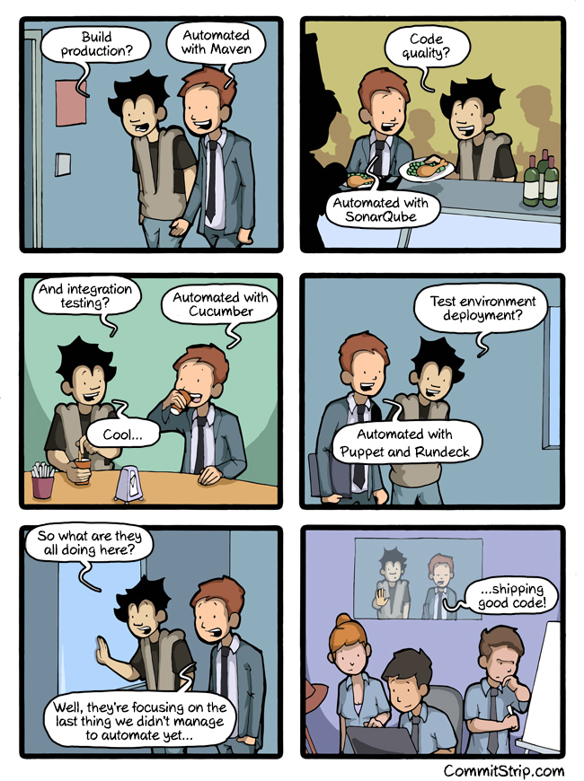
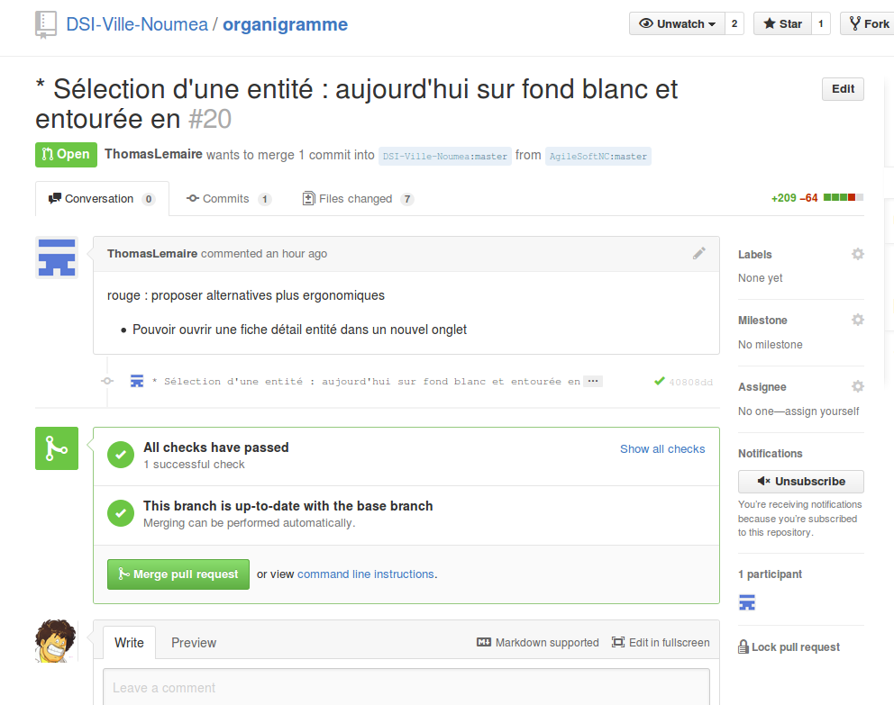
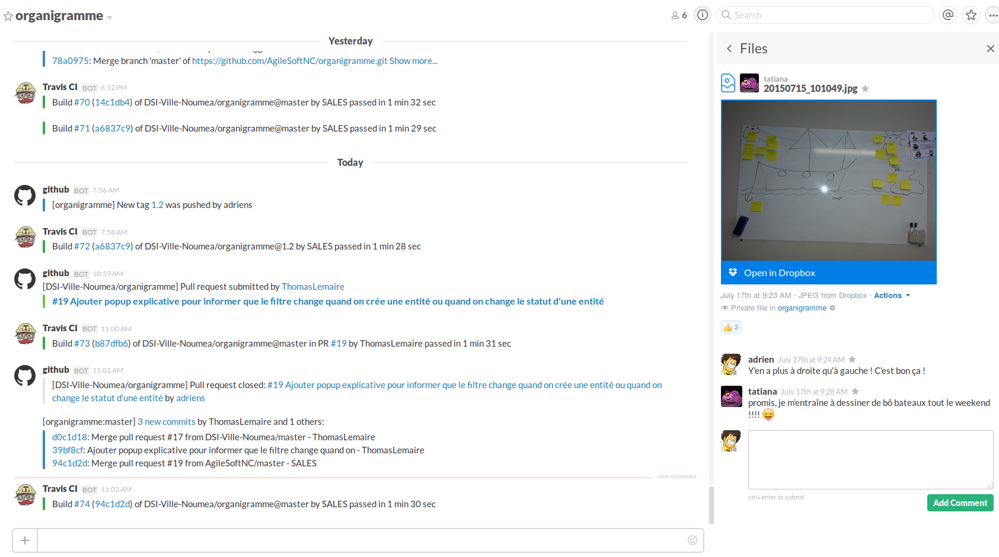
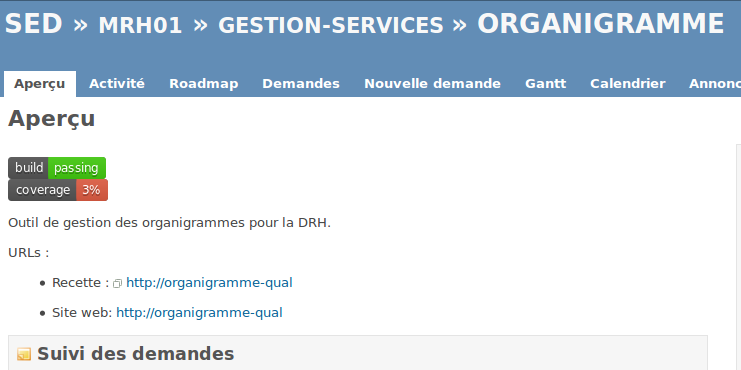

- fondation apache
- project object model (POM)
- builder quoi : jar, war, .deb, .rpm
- tester, déployer
- site web, reporting, documentation
- orchestration complète chaîne de build
Adrien, il faut publier le code source (très) rapidement en open et ouvert à tous rapidement afin de disposer de la license ZOL


There are 10.3M people collaborating right now across 25.2M repositories on GitHub. Developers from all around the world are building amazing things together. Their story is our story.


Aujourd’hui, CommitStrip accueille un nouveau parrain qui recrute à grande vitesse, c’est Voyages-sncf.com ! A vrai dire, on ne s’attendait pas à découvrir une usine logicielle aussi développée et moderne : culture DevOps très présente, automatisations avec des solutions très actuelles comme Jenkins, Maven, SonarQube, Cucumber, et déploiements agiles avec Puppet et Rundeck. Pas mal non ?
Sachant qu’ils gèrent des gros volumes de data, ce ne sont pas les challenges techniques qui doivent manquer. Alors, n’hésitez pas à jeter un oeil à leurs offres d’emploi sur CommitStrip Jobs (Développeur JavaEE, Analyse consultant fonctionnel, Chef de projet technique), à Paris, Lille ou Nantes (vive l’ouest !).




